Linear and Nonlinear Electrochemical Impedance Spectroscopy: A Data Science Perspective
Matthew D. Murbach and Daniel T. Schwartz
Electrochemical Materials and Interfaces Lab
mmurbach@uw.edu
Electrochemical Impedance Spectroscopy:
Linear + Nonlinear
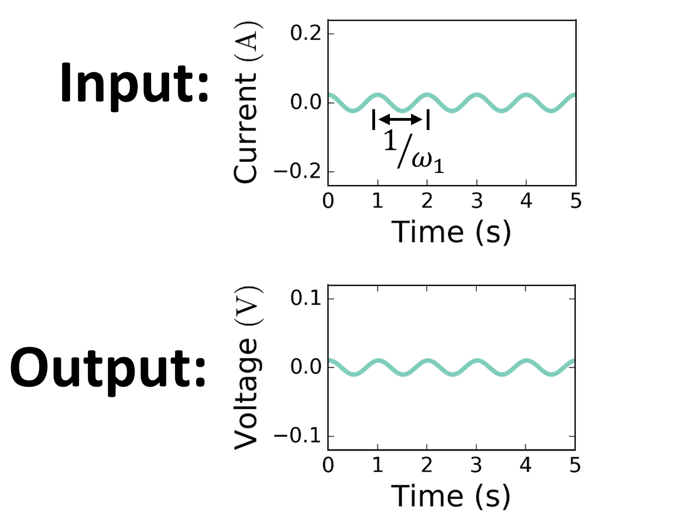
Small perturbation =
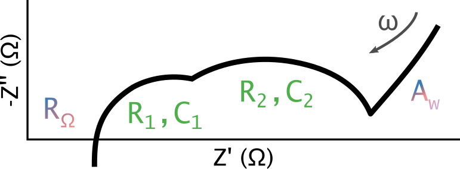
EIS provides a linearized method for separating physical processes via timescales.
M. E. Orazem and B. Tribollet, Electrochemical Impedance Spectroscopy (2008)
So let's just dive in... From the wide variety of great talks in this EIS session this week, I think it's relatively safe to say that impedance spectroscopy is a powerful technique for generating insight into electrochemical systems. As most of you know, the basis for linear EIS is the use of a small perturbation which ensures that the response is linear. This makes the analysis of the results relatively straightforward and there is a lot of great literature in this area. And one example of this might be fitting models to the example spectra shown here. We might get 6 or 7 bits of information from this type of analysis, but in the physical system there are often a lot more parameters that go into it. In a typical battery model for instance, you might have 30 or 40 parameters.
Electrochemical Impedance Spectroscopy:
Linear + Nonlinear
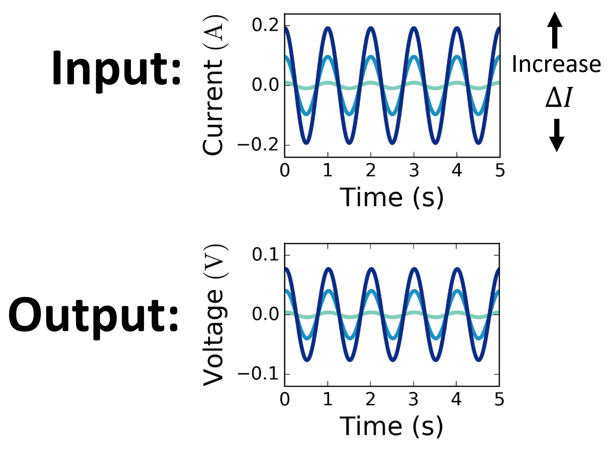
Moderate perturbation =
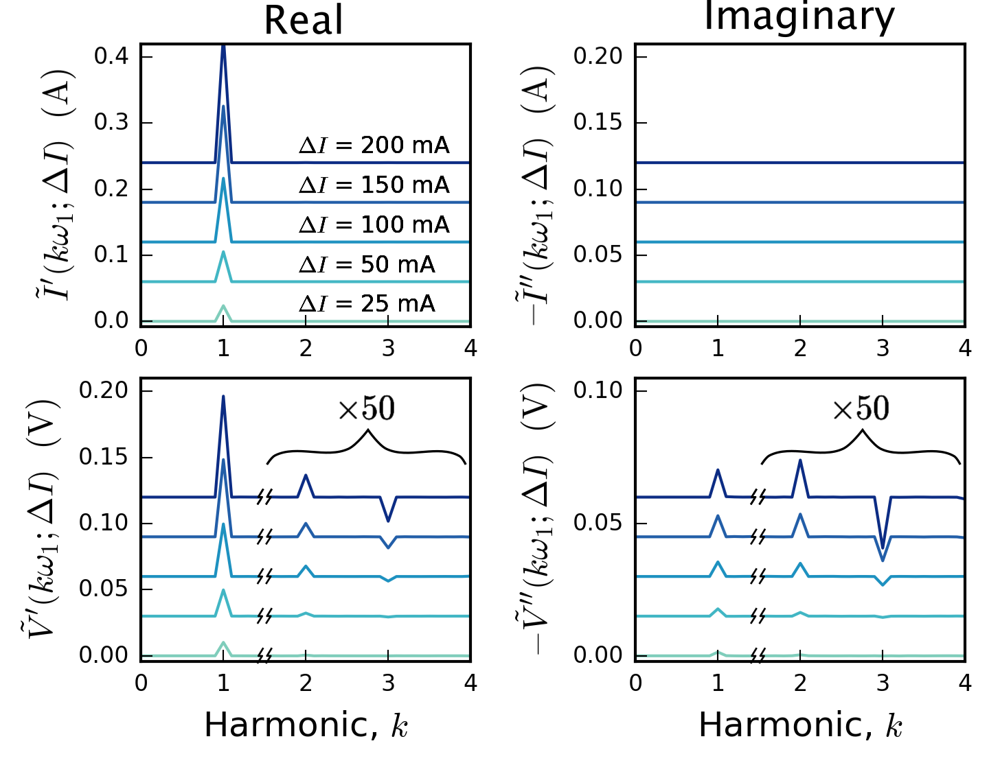
J. A. Medina and D. T. Schwartz, Journal of the Electrochemical Society, 144, 155–164 (1997).
Well one way to increase the informational content of this technique is through nonlinear EIS, where the use of a moderate amplitude perturbation leads to a harmonic response. And these harmonics grow out of the background in a well defined power lay type way where the first grows linearly, the second quadratically, and the third cubically. And this is math that the schwartz lab has been working on for 20 plus years and the really powerful part about it is that it allows you to remove the amplitude dependence and capture a purely frequency dependent dispersion coefficient like we do in EIS. More recently, this technique was shown to be a powerful method for discriminating between different oxygen transport models in SOFC half cell. Now we are applying NLEIS to a full cell lithium ion battery.
NLEIS experimental spectra
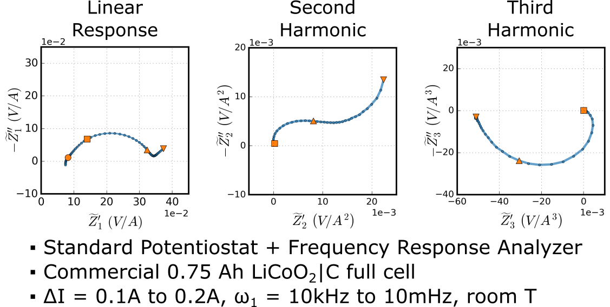
Nonlinear EIS spectra add a source of additional information...
...but are more challenging to interpret.
And when we do this experimentally, we get harmonic spectra. In fact performing these experiments is relatively straightforward with standard potentiostat + FRA and by choosing the correct amplitudes we essentially get the linear response EIS plus additional higher order harmonic spectra. So the challenge isn't in performing the experiments, it's in analyzing the results.
Computing nonlinear impedance spectra using the pseudo 2-dimensional battery model
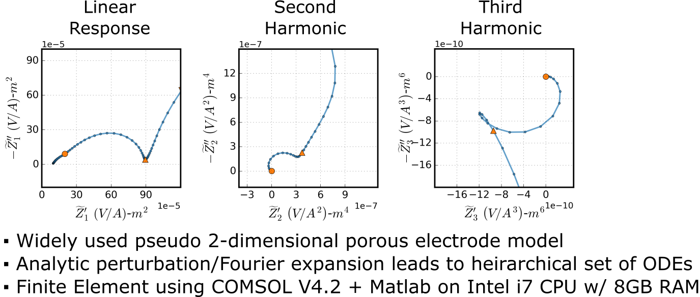
M. Doyle, T. F. Fuller, and J. Newman, Journal of the Electrochemical Society, 140, 1526–1533 (1993).
To do this we are using the pseudo 2-dimensional battery model from Prof. Newman's group. This happens to be one of the most widely used models and we aren't going to mess with the physics really. And I should say that We are currently running these simulations on a local computer in the lab, but this approach would scale really well to supercomputer or cloud computing resources
A data driven approach
Method: Perform tens of thousands of simulations for each harmonic covering the 40-dimensional parameter space
Explore interactions between parameters
Analyze parameter sensitivities as a function of frequency
Introduce supervised and unsupervised machine learning
And now is where we can see the differences between the more traditional deterministic approach we took before with the SOFCs for example. There we took several different models which all were degenerate in the linear response, and were able to show that by looking at the nonlinear response, we could see what corresponded to experimental data. Here though we want to analyze a little more complex full cell system and by using a data driven approach where we just simulate thousands of simulations for all sorts of different combinations of parameters, we can hope to start to tease out some more information about the complex interactions which lead to these results.
Computing spectra across the entire
The P2D model has dozens of parameters
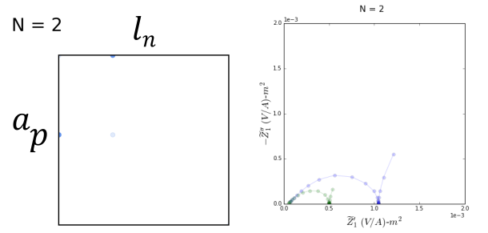
Sobol' sampling ensures efficient coverage of the parameter space
https://github.com/SALib
So to do this, we take our dozens of parameters in the standard P2D model and vary them throughout physically meaningful ranges. There are some useful statistical methods namely sobol sampling which allow us to cover the parameter space more efficiently that purely random sampling, but essentially what we end up with is a large number of harmonic spectra each with different parameter sets where we have a mean spectra looks like a typical battery spectra like we might expect.
Computing spectra across the entire
The P2D model has dozens of parameters
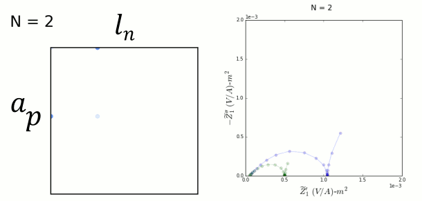
Sobol' sampling ensures efficient coverage of the parameter space
https://github.com/SALib
So to do this, we take our dozens of parameters in the standard P2D model and vary them throughout physically meaningful ranges. There are some useful statistical methods namely sobol sampling which allow us to cover the parameter space more efficiently that purely random sampling, but essentially what we end up with is a large number of harmonic spectra each with different parameter sets where we have a mean spectra looks like a typical battery spectra like we might expect.
Computing spectra across the entire
So if we take all of these simulations and we compare each one with the mean spectra. So here we have how close a certain spectra is to the mean linear spectra versus how close a certain spectra is to the mean second harmonic spectra. And already we can see something interesting about these results. There are a lot of cases where a we have very similar linear impedance spectras, but different second harmonic spectras and vice versa. For instance let's dive into these two points here where the linear impedance is the same, but the second harmonic is different...
For linear impedance we have simple ways of discussing the informational content
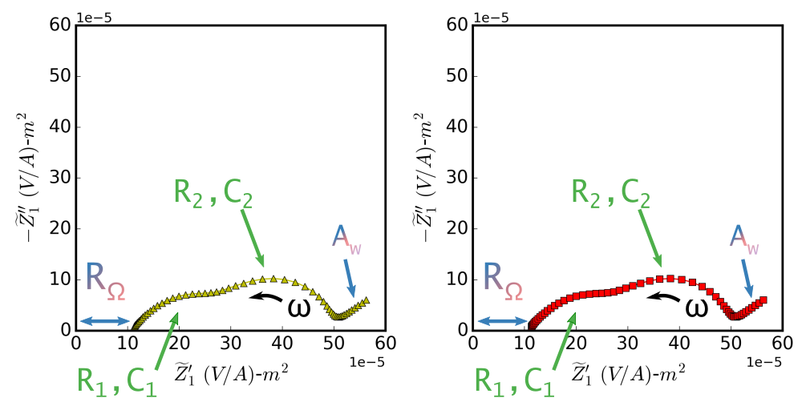
As expected, these two simulations, despite having different parameter sets, have degenerate linear impedance spectras. The information content in both of these is identical and we can't say anything about the underlying physics that's different between the two.
For nonlinear impedance, more interactions lead to additional information
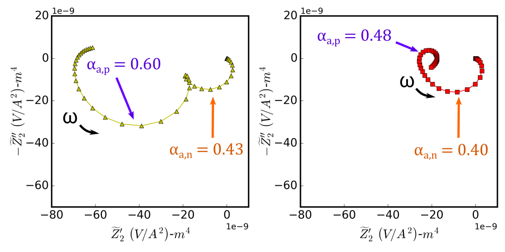
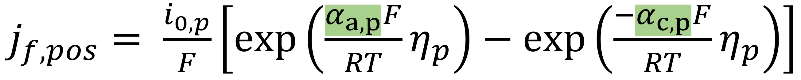
But what if we look at the second harmonic. Again we are looking at the real component of this second harmonic frequency dispersion function Z2 versus the imaginary component. And we can immediately see that they are different. And the reason they are different is because the parameters that were different in the two simulations were the charge transfer coefficients, the alphas, in the kinetics of both the positive and the negative electrodes. Now, I could've told you this directly from the math, this is one of the simplest examples of the differing sensitivity between the first and second harmonic, but what if we want to dive a little deeper and explore some of the more complex interactions between parameters and the harmonics' sensitivity to them.
A data driven approach
Method: Perform tens of thousands of simulations for each harmonic covering the 40-dimensional parameter space
Explore interactions between parameters
Analyze parameter sensitivities as a function of frequency
Introduce supervised and unsupervised machine learning
Sensitivity Analysis
Traditional, one-factor at a time
Varaiance-based
Change one parameter at a time, calculate derivatives
Limited to probing local sensitivity
No sense of interactions between parameters
Fast and easily interpreted
Sample a distribution of parameters, calculate sensitivity indices
Probes the global sensitivity
Requires many more simulations
To do this we can look at a sensitivity of the responses given the set of parameters. So the example I just showed is essentially this kind of traditional, change one parameter at a time type of approach where we can see how a single change affects the response, but for a nonlinear system we are only probing local sensitivity and we can't say anything about how parameters interact. The next level of analysis though is called this variance based approach, where the goal is to essentially say how much of the variance in the output can be attributed to each of the different parameter inputs. This method is a global method since we care about the entire range of the parameters.
Variance-based Sensitivity Analysis
First Order Sensitivity
$ S_i = \frac{V_{X_i} \left(E_{X_{\sim i}} \left(Y | X_i \right)\right)}{V\left(Y\right)}$
Total Sensitivity
$ S_{Ti} = \frac{E_{X_{\sim i}} \left(V_{X_{i}} \left(Y | X_{\sim i} \right)\right)}{V\left(Y\right)} = 1 - \frac{V_{X_{\sim i}} \left(E_{X_{i}} \left(Y | X_{\sim i} \right)\right)}{V\left(Y\right)}$
A. Saltelli, Computer Physics Communications, 145, 280–297 (2002)
There are a few different sensitivity indices that you can calculate in this type of analysis. Namely, first and total order sensitivity. For the first order sensitivity index we want to look at the variance (that's this V) of expected value (thats this E) of the response given the parameter Xi. This gives us a sense for the amount the variance that we would remove if we were to fix that parameter. The second index that we care about, and this will be what I show you on the next chart is the total sensitivity. And here we want to ask what is the expected value of the variance in the response given all of the parameters except Xi. And obviously these are all normalized to the total variance in the output V(Y).
A data driven approach
Method: Perform tens of thousands of simulations for each harmonic covering the 40-dimensional parameter space
Explore interactions between parameters
Analyze parameter sensitivities as a function of frequency
Introduce supervised and unsupervised machine learning
Next steps: Extend insight from the
Unsupervised Machine Learning
Understand underlying structure of spectra
Gain insight into clustering or classification of battery states
Supervised Machine Learning
Given an impedance spectra, predict parameters for the model
Estimate internal state metrics (state of health + remaining usable lifetime)
And finally, now that we are building this relatively big data set, we can apply other cool machine learning algorithms as well. For one, we can use unsupervised machine learning, things like principal component analysis and clustering algorithms to discover underlying patterns in the parameter or battery states. As well as supervised methods, where we can ask the model to learn the reverse problem. Namely given an impedance spectra, what are the parameters that correspond. Other people have started to work on this with just the EIS data, but we think with the additional information in the higher harmonics, we can more finely tease out the relationships and ultimately get better predictions.
Summary
Nonlinear electrochemical impedance spectroscopy (NLEIS) can provide additional information with the same effort and time as an EIS experiment.
The harmonic spectra each provide different information about the physicochemical system
Data science tools can provide insight into our electrochemical research -- we shouldn't just let them be used to sell advertisements...
Acknowledgements
Prof. Dan Schwartz
Prof. Hanna Hajishirzi
Dept. of Education GAANN
NSF Data Science IGERT
UW Clean Energy Institute
Thank you!
Questions?
Presentatation can be found at: